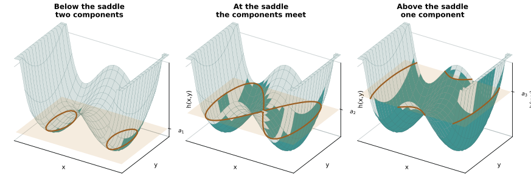
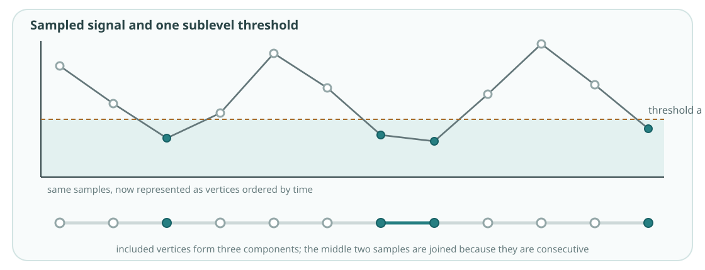
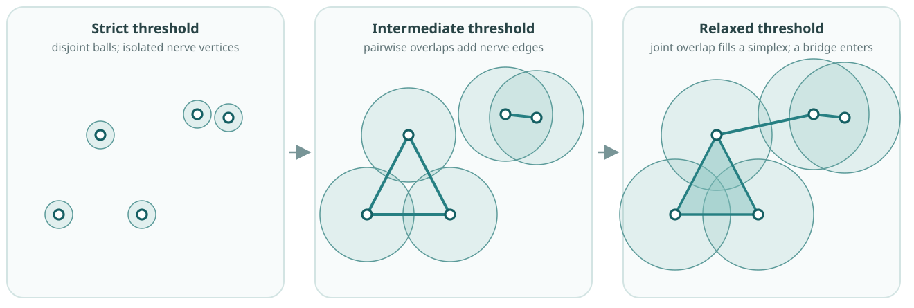
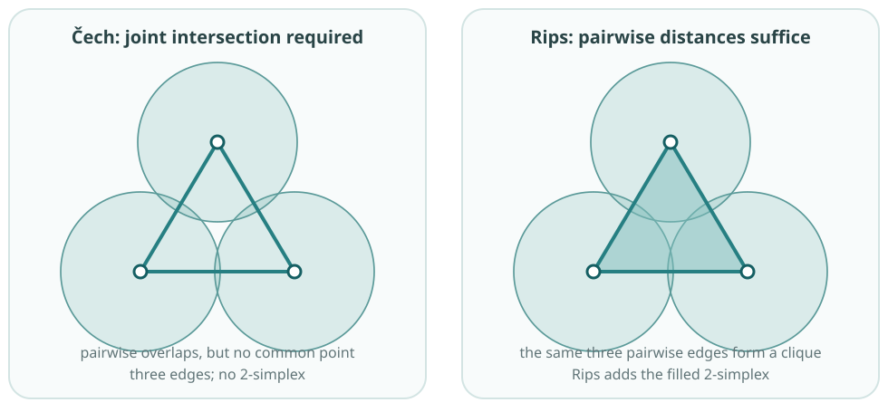

Foundation 3B: Constructing filtrations in detail
Further reading. Edelsbrunner and Harer, Chapter III, develops nerves, Čech, Rips and alpha complexes (Edelsbrunner and Harer 2010). Postol, Sections 5.1, 5.6 and 5.7, gives a shorter route through Rips, sublevel and graph filtrations (Postol 2024). See Chazal, de Silva and Oudot for a more technical geometric treatment (Chazal et al. 2014).
The course construction starts with a finite simplicial complex \(K\) and an entry-value function
\[ f:K\to\mathbb R. \]
Here \(K\) is a collection of simplices. The notation means that every simplex \(\sigma\in K\) receives its own real value \(f(\sigma)\); it does not assign one number to the whole complex. At threshold \(a\), retain
\[ K_a=\{\sigma\in K:f(\sigma)\leq a\}. \]
Reading \(f:K\to\mathbb R\). Think of a table with one row per simplex and one entry value beside it. Thresholding that column selects the simplices in \(K_a\).
The values must respect faces:
\[ \tau\subseteq\sigma \quad\Longrightarrow\quad f(\tau)\leq f(\sigma). \]
Thus a filled triangle cannot enter before one of its edges. Because \(K\) is downward closed and faces enter no later than their cofaces, every \(K_a\) is a simplicial complex. Because \(a\leq b\) implies \(f(\sigma)\leq a\) only if \(f(\sigma)\leq b\), these complexes are nested:
\[ K_a\subseteq K_b. \]
Two separate requirements. Downward closure concerns the faces within one complex \(K_a\). Nestedness compares two thresholds and says that later complexes retain earlier simplices. Downward closure of \(K\), together with a face-monotone entry rule, makes every \(K_a\) a complex; thresholding the same entry values makes the family nested.
The values of \(f\) need only be ordered and face-monotone. They need not be distances: height, intensity, density, edge weight and other real-valued scores can all define filtrations.
The constructor determines which simplices are available and how entry values are obtained. In a lower-star filtration, a supplied complex is fixed and vertex values extend to its simplices. In a Rips filtration, the point cloud, metric and clique rule determine both the simplices and their entry values. These constructions share the nested form above, but they do not represent the same scientific relationships.
Value-based filtrations
A scalar field orders locations by a measured or modelled value. Sublevel sets retain low values first; superlevel sets retain high values first. The direction changes what a component or hole means.
ExampleFilter a landscape by height
Let \(h:X\to\mathbb R\) give the height of a landscape. Its sublevel set is
\[ X_a=\{x\in X:h(x)\leq a\}=h^{-1}(-\infty,a]. \]

Two low basins appear as separate components. They meet when the threshold reaches the saddle. Raising the threshold adds locations rather than replacing them, so \(a\leq b\) gives \(X_a\subseteq X_b\).
Height is the chosen ordering. For an energy landscape, low-valued basins and their merger barriers may be meaningful. If large density or activity is the target, a superlevel filtration may be the appropriate question instead.
Dynamical and complex systems intuition. If \(h\) is an energy or potential on state space, sublevel sets expose low-energy regions and the barriers that join them. If \(h\) is speed or instability, birth and merger acquire a different interpretation.
For a simplicial complex with values \(g(v)\) on its vertices, the lower-star filtration assigns
\[ f(\sigma)=\max_{v\in\sigma}g(v). \]
A simplex enters when its highest-valued vertex enters. Every face enters no later than its coface, so the rule is face-monotone.
Why “lower star”? The star of a vertex contains the simplices that include it. At value \(g(v)\), the lower-star construction adds \(v\) together with those simplices in its star whose other vertices have values no larger than \(g(v)\). The maximum rule is the compact formula for this operation.
ExampleFilter a sampled time series directly
Treat sample times as vertices of a path and join consecutive times by edges. Give vertex \(t_i\) the value \(x(t_i)\). At threshold \(a\), include the samples with \(x(t_i)\leq a\) and an edge whenever both of its endpoint samples have entered.

Each connected component is a consecutive run of included sample times. It is not a cluster of similar values drawn from unrelated times. As \(a\) rises, runs grow and merge when the intervening sample enters.
What this preserves. The path edges retain temporal adjacency. A direct sublevel filtration therefore studies low-valued runs along time, not a state-space loop or periodic orbit.
Proximity filtrations
Let \(X=\{x_1,\ldots,x_n\}\subset\mathbb R^d\) be a point cloud with a chosen metric. At pairwise-distance threshold \(\varepsilon\), place a ball of radius \(\varepsilon/2\) around each point:
\[ U_\varepsilon=\bigcup_{x\in X}B(x,\varepsilon/2). \]
The same observations and metric produce increasingly connected unions as \(\varepsilon\) grows. Their Čech nerves form a finite nested representation of that geometry.

Sampling still matters. Dense sampling can close a gap sooner than sparse sampling, while an outlier can remain isolated for a long range. Persistence describes this sampled construction before it supports a claim about an underlying space.
The Čech complex is the nerve of these balls:
\[ \check C_\varepsilon(X)= \left\{\sigma\subseteq X: \bigcap_{x\in\sigma}B(x,\varepsilon/2)\ne\varnothing\right\}. \]
Every joint intersection creates a simplex. Any subcollection also intersects, so the constructor is automatically downward closed. Euclidean ball intersections are convex and therefore contractible. The Nerve Theorem then gives
\[ |\check C_\varepsilon(X)|\simeq U_\varepsilon. \]
The symbol \(\simeq\) denotes homotopy equivalence. The complex and union have the same homotopy-invariant information, including homology; they are not the same geometric subset of space.
The Vietoris–Rips complex uses only pairwise distances:
\[ \operatorname{Rips}_\varepsilon(X)= \{\sigma\subseteq X:\operatorname{diam}(\sigma)\leq\varepsilon\}. \]
Connect points at distance at most \(\varepsilon\), then fill every clique. The pairwise test is easier to compute, but it can add a higher-order simplex when the corresponding balls have no common joint intersection.
Rips is a flag filtration. At each \(\varepsilon\), form the threshold graph whose edges join pairs at distance at most \(\varepsilon\); its flag, or clique, complex is \(\operatorname{Rips}_\varepsilon(X)\). A general flag filtration can instead order edges by network weight, correlation or another pairwise score.
What Ripser checks. Ripser.py can take a point cloud or a precomputed square matrix and builds the flag filtration from those pairwise values. It does not establish that a supplied matrix is a scientifically meaningful metric. If the values are non-metric dissimilarities, describe the result as a dissimilarity-based flag filtration and do not assume metric-specific interpretations or guarantees. See the Ripser.py input documentation.

Here all three pairs of balls overlap, but no point lies in all three balls. Čech therefore contains the three edges but not the 2-simplex. Rips sees the same three pairwise relations and fills their clique. Thus
\[ \check C_\varepsilon(X)\subseteq \operatorname{Rips}_\varepsilon(X), \]
and the inclusion can be strict (Edelsbrunner and Harer 2010, III.2). The point cloud, metric and threshold are unchanged; the constructor changes which higher-order relations are asserted and hence which cycles are filled.
Collective systems intuition. Filling a Rips triangle treats three mutually close agents as one coherent three-way unit. If the science supports only pairwise interaction, that clique-filling assumption must remain visible when interpreting a missing \(H_1\) class.
Inclusion maps
For \(a\leq b\), nestedness supplies the inclusion map
\[ \iota_{a,b}:K_a\hookrightarrow K_b. \]
It sends each simplex already present in \(K_a\) to that same simplex in \(K_b\). The hooked arrow emphasises that this map includes the smaller complex in the larger one. Applying homology to these inclusions will say what each class becomes as the threshold changes.
The checkpoint is to explain what \(f(\sigma)\) means, distinguish downward closure from nestedness, identify the constructor and entry rule in a value-based or proximity filtration, and read \(\iota_{a,b}:K_a\hookrightarrow K_b\) as inclusion of complexes.